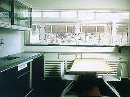

Schröder house, Utrecht, Netherlands 1924
Gerrit Rietveld

Houses of the Century
Anatxu Zabalbeascoa |
In this house the ideas of the De Stijl group
were realised. The house contains of light stainless steel, primary
colours and horizontal and vertical planes. Most of the internal
partitions are movable, allowing various combinations within
the same area. According to the use of lightweight structure
the separation between the interior and the exterior could be
limited. On the picture you see the kitchen of the house (with
the Zig-Zag chairs). The window which provides daylight for the
kitchen table and the worktop is placed from side- to side-wall. |
 |
Fallingwater, Bear Run, Pennsylvania 1935
Frank Lloyd Wright
Houses of the Century
Anatxu Zabalbeascoa |
This famous house is a fusion of architecture
and nature, which is typical for Frank Lloyd Wright's style.
The concrete structure is founded on rocks. Although the heaviness
of the building, the horizontal terraces cause for a different
(light) look. The interior of the building seems to look like
a furnished cave. The terraces are not the only ones who cause
the horizontal impression of the house. Also the windows which
are places in horizontal strips cause this impression. On the
picture on the right you see the interior of the living room
illuminated by a big horizontal window in the facade. |
 |
A House in Buderim, Australia
Lindsay Clare
Country Houses
Telleri |
Tropical climate and hot sun has influenced the
design of this house. Three rectangle, distinct but connected
units, within each its own function, form the structure of the
house. Windows are placed on the north side of the house and
the iron roofs have large overhangs to make sure the rooms don't
get to hot. Lindsay Clare pays a close attention to materials
and colours but also to the passage of the sun and de direction
of the wind. On the picture on the right you see the bedroom
with its direct contact with the natural surroundings. You can
see the simplicity of forms and materials. |
|
|
Industriële Bakkerij Bruinhart NV, Beveren, België,
1993-1995
Ronny De Meyer & Lut PrimsJaarboek Architectuur Vlaanderen 1994-1995
Ministerie van de Vlaamse Gemeenschap |
This industrial production hall is build out
of aluminium elements. The hall is 123 meters long, 30 wide and
6 high. An office floor has been built at half height in the
middle of the hall as can be seen on the left photograph. The
right photograph shows the interior of the office floor. Horizontal
windows have been placed to provide for daylight. The windows
have the same standard dimensions as the other elements in the
structure so they can easily be integrated. |
|
|
Eigen Woning en Atelier, Ellezelles, België, 1990-1997
Stefaan Onraet en Ann Dever
Jaarboek Architectuur Vlaanderen 1996-1997
Ministerie van de Vlaamse Gemeenschap |
The architects converted this former village
school next to the church into a house and studio for themselves.
The structure of the building and the former division of rooms
has been retained. To optimize through-views new windows were
introduced which greatly changes the character of the building.
The right photograph shows the interior of the office. Windows
nearby the office desks provide for daylight on the workplace.
Artificial light coming from the intersection of the walls and
the ceiling makes sure the distribution light in the room becomes
more equable.
|
|
|
|
|
|
|
|
|
|